Настоящая Вода
+7(987)654-32-10

При оптовом заказе - скидка 80% на доставку. Есть возможность приобретения минеральной воды в бутылях для кулеров.
Минеральная вода для Вашего стола
Покупайте нашу минеральную воду оптом и в розницу - для праздников и после них.При оптовом заказе - скидка 80% на доставку. Есть возможность приобретения минеральной воды в бутылях для кулеров.
Преимущества нашей воды
Наша природная минеральная вода богата такими макроэлементами, как магний, кальций и натрий, а также содержит множество незамених для человека минералов и микроэлементов.
Уникальный минеральный состав нашей воды способен заряжать энергией организм, помогать в борьбе с вирусами и инфекциями. Помимо этого наша минеральная вода улучшает пищеварение и нормализует обмен веществ, что способствует снижению массы тела.

Вся наша вода добывается исключительно из природных источников. Она формируется в земной толще и в течение нескольких лет фильтруется через слои горных пород пока не преодолеет путь до водоносного пласта, откуда мы ее добываем и доставляем прямо к Вам.